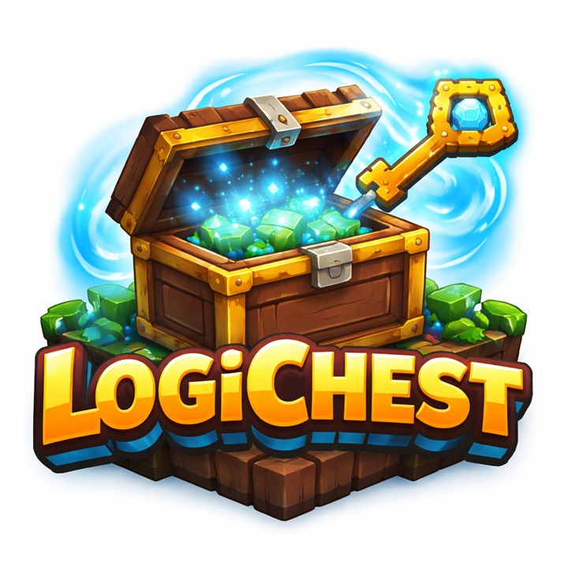
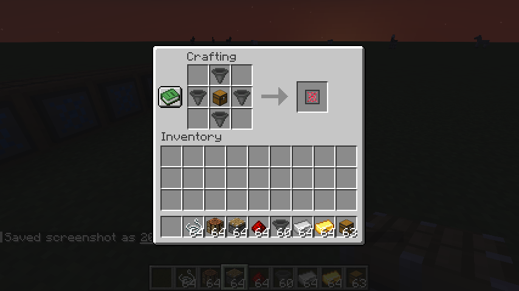
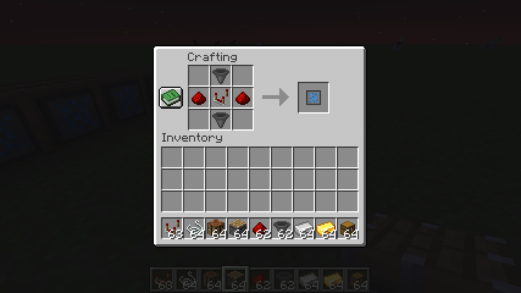
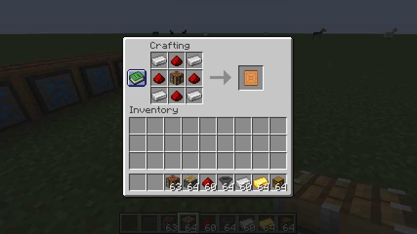
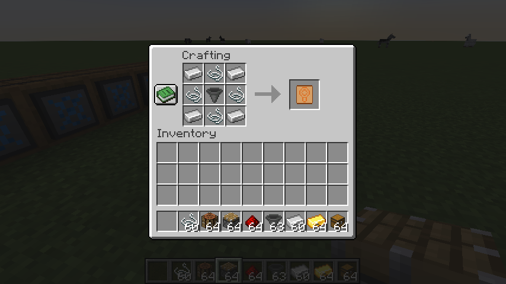
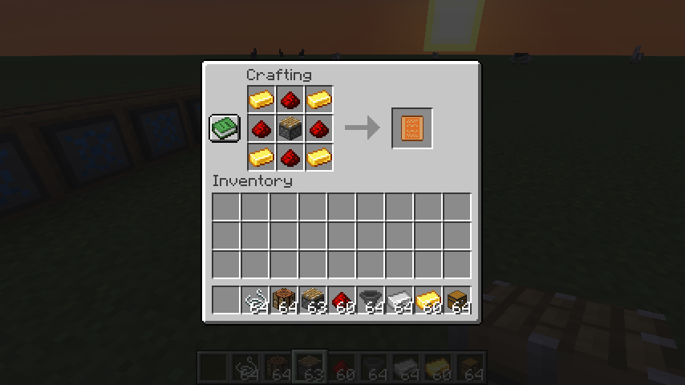
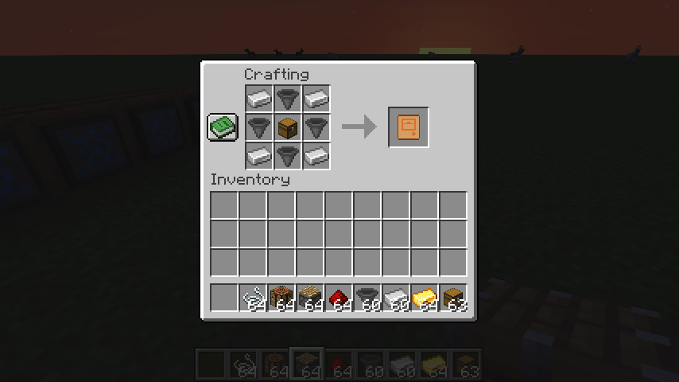

Minecraft Mod (Forge)
Hub-and-sorter storage routing with clean rules, survival-friendly pacing, and upgrade-based scaling — including optional autocrafting, autosmelting, and multi-hub authorization.
Pulls from the container the Hub is facing and routes into sorter destinations.
10-slot whitelist (ghost filters) routes by item type (simple & predictable).
Optional upgrades craft or smelt directly from the Hub into a sorter’s output.
Keychain Module adds a 9-slot key ring so one sorter can authorize multiple hubs.
LogiChest is a lightweight Forge mod that adds a clean logistics layer to survival storage. You build a Hub to act as the router, then attach Sorters that decide what items should be routed and where they should be delivered.
The goal: keep automation readable, predictable, and server-friendly — without turning your base into a spaghetti pipe network.
The Hub pulls items from the inventory directly in front of it (the direction the Hub is facing). Each linked Sorter points at a destination inventory (the container in front of the Sorter). If an item in the Hub’s source matches a Sorter’s filters, the Hub moves it into that Sorter’s destination.
Link Keys are crafted inside the Hub over time and become bound to that specific Hub (ID + position + dimension). Put the key into a Sorter’s link slot to connect it. If the Hub is at max linked Sorters, the link is rejected.
The Hub crafts a LogiLink Key using: Iron Ingot + Redstone + Amethyst Shard
(craft time is configurable).
Each Sorter has 10 ghost filter slots. Filters match by item type (NBT isn’t considered). Only items that match a Sorter’s filter list are eligible to be routed into it.
Each Sorter has 4 upgrade slots. Some upgrades can stack to scale performance and throughput.
Install the Keychain Module to give the sorter a hidden 9-slot keychain inventory. Put multiple Hub-bound Link Keys into it and the sorter can register with multiple hubs (as long as each hub has capacity).
Bonus: the Keychain Module item itself can be right-clicked to open its own 9-slot GUI (handy for managing keys).
With Autosmelter Core installed, the sorter can smelt items using real fuel burn time rules. Fuel is pulled from the Hub inventory (and container items like buckets are returned when possible). Output goes to the sorter’s destination container.
LogiChest includes a Forge server config to tune pacing and limits. Defaults:
Storage rooms, farm outputs, smelter buffers, and “loot intake” systems where you want clean routing without complexity.
The Hub routes items from its facing inventory to sorter destinations based on sorter whitelist filters.
Sorters scale with upgrades: faster cycles, bigger batches, plus optional craft/smelt automation.
The Hub pulls from the container it is facing.
Each sorter points at the container it should fill.
The Hub crafts keys over time using 3 ingredients.
Iron Ingot, Redstone, Amethyst Shard into the Hub inputsLink keys connect a sorter to a hub, filters decide what it accepts.
Scale routing, enable crafting, or enable smelting.
Authorize one sorter for multiple hubs by storing multiple keys.
The central router. Pulls from the inventory it faces.
Recipe:
[ ] [Hopper] [ ]
[Hopper] [Wood Chest] [Hopper]
[ ] [Hopper] [ ]
Uses forge:chests/wooden (any wooden chest).
Whitelist filter + destination delivery. Faces the output container it fills.
Recipe:
[ ] [Hopper] [ ]
[Redstone] [Comparator] [Redstone]
[ ] [Hopper] [ ]
Upgrade. Enables crafting from Hub inventory into the sorter destination.
Recipe:
[Iron] [Redstone] [Iron]
[Redstone][Crafting Table][Redstone]
[Iron] [Redstone] [Iron]
Upgrade. Enables smelting from Hub inventory into the sorter destination (fuel from the Hub).
Recipe:
[Iron] [Redstone] [Iron]
[Redstone][Furnace] [Redstone]
[Iron] [Redstone] [Iron]
Upgrade. More coils = faster sorter cooldown (and faster craft/smelt interval). Stacks up to 8 per stack.
Recipe:
[Gold] [Redstone] [Gold]
[Redstone][Piston] [Redstone]
[Gold] [Redstone] [Gold]
Upgrade. Increases transfer batch amount (base 1 + boosters). Stacks up to 8 per stack.
Recipe:
[Iron] [Hopper] [Iron]
[Hopper] [Wood Chest][Hopper]
[Iron] [Hopper] [Iron]
Uses forge:chests/wooden (any wooden chest).
Upgrade. Adds an internal 9-slot keychain inventory to a sorter (authorize multiple hubs).
Recipe:
[Iron] [String] [Iron]
[String] [Hopper] [String]
[Iron] [String] [Iron]
Crafted over time inside the Hub (not a crafting-table recipe). Stores hub ID + position + dimension.
Hub inputs:
- Iron Ingot
- Redstone
- Amethyst Shard
Default craft time: 600 ticks (30s)







For servers: keep mod versions pinned and consistent across client + server.
1) Install Forge for your Minecraft version
2) Drop LogiChest into /mods (client + server)
3) Launch once to generate the config
4) Restart after any config changes